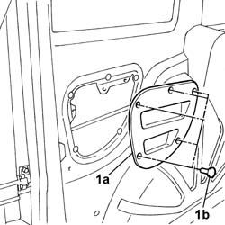

5505B42 wiring built into load compartment left rear door flap r r
- Path
- Procedures > 55 ELECTRICAL EQUIPMENT > 5505 ELECTRICAL CIRCUIT FOR INSTRUMENTS/INDICATORS > 5505B door,boot and bonnet wiring. > 5505B42 wiring built into load compartment left rear door flap r r
- Kind
- repair procedure (removal / refitting; the operation number is the code)
- Applies to
- all engines; all production periods
- Interactive page
- https://sloeber94.github.io/elrnDB-fDbl/en/#/2584887
Applies to: all engines; all production periods
 Removing
Removing
 Refitting
RefittingDisconnect the battery negative terminal.
Op. 7020E34 REAR DOOR FLAP INTERIOR PANEL - R+R
Op. 5050C10 REAR WINDOW WASHER JET - R+R CLEAN AND/OR POSITION
Applies to: all engines; all production periods; only with equipment: Cargo trim level
1. Release the panel (1a) from the fixing buttons (1b).

Applies to: all engines; all production periods; only with equipment: Doblò trim level
Applies to: all engines; all production periods; only with equipment: Doblò trim level
Applies to: all engines; all production periods
Refitting
RemovingApplies to: all engines; all production periods; only with equipment: Cargo trim level
Fit the panel and secure it using the buttons.
Applies to: all engines; all production periods; only with equipment: Doblò trim level
Applies to: all engines; all production periods; only with equipment: Doblò trim level
Op. 5050C10 REAR WINDOW WASHER JET - R+R CLEAN AND/OR POSITION
Op. 7020E34 REAR DOOR FLAP INTERIOR PANEL - R+R
Connect the battery negative terminal.